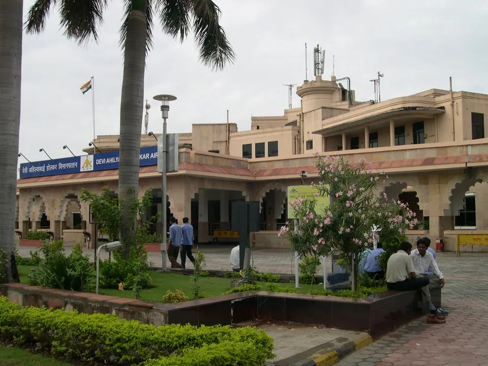
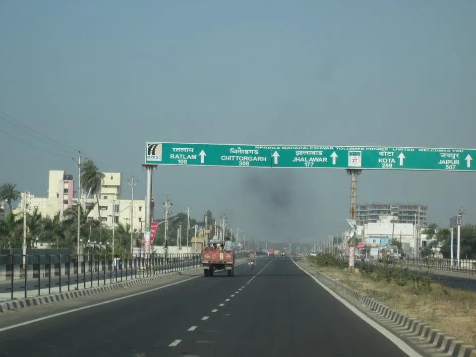

Indore Airport to Ujjain: Taxi, Bus, Train, Time and Fare

Indore airport is about 53 to 58 km from Ujjain, depending on the source, and a pre-booked taxi is the quickest and easiest way: roughly 1 hour to 1 hour 30 minutes on the Indore–Ujjain highway. Buses and trains are cheaper, but both start in Indore city, not at the airport, so you need one extra leg first.
Most families who come to us fly into Indore, often with parents or children tired from the journey. They usually ask the same thing: what is the simplest way to reach Ujjain and Mahakaleshwar without a muddle? Here is what we have found, with sources, so you can pick the option that suits your family.
Indore airport to Ujjain at a glance
Ujjain has no commercial airport that we know of. The nearest is Devi Ahilyabai Holkar Airport in Indore, which the Ujjain district website puts at about 53 km from Ujjain. Other guides say 55 km (Ujjain Darshan) or 58 km (Trawell). Sources measure to slightly different end points, so treat these as a guide.
- Taxi or cab: about 1 hour 15 minutes by one guide, up to 1 hour 30 minutes by others. Door to door, the fastest option.
- Bus: about 1 hour 5 minutes to 2 hours 30 minutes from Indore city, depending on the operator, plus your trip from the airport to the bus stand.
- Train: about 1 hour 30 minutes from Indore Junction to Ujjain Junction, plus the trip from the airport to the station.
By taxi or cab: the easy choice for families
The road is the Indore–Ujjain State Highway 27, and Ujjain Darshan says direct airport cabs take about 75 minutes to reach the Mahakal Lok corridor. Cabbazar gives a range of about 1 to 1.5 hours. Rome2Rio shows a plain drive of about 54 minutes, which is what you get on a clear road with no stops.
What the taxi costs
Third-party listings show pre-booked airport cabs at ₹1,200 to ₹1,600 depending on sedan or SUV (Ujjain Darshan), and Rome2Rio lists taxis from Indore at about $11 to $14.
If you book through us, our indicative one-way prices from Indore airport are ₹2,500 for a sedan, ₹3,500 for an SUV, ₹4,500 for an Innova Crysta and ₹6,500 for a 12-seater tempo traveller. These are indicative only, so please WhatsApp us for a confirmed quote. We mention both so that you can compare honestly.
Tips for booking a cab
- Book before you fly, and share your flight number so the driver can track delays.
- Ask whether the fare is fixed, and whether tolls and waiting time are included.
- With grandparents, a sedan or SUV with good boot space is easier than a crowded shared ride.
- A group of 7 to 12 usually does better in a tempo traveller than in two cars.

By bus: cheaper, but not from the airport door
We could not confirm a state bus that runs straight from the airport to Ujjain, and Ujjain Darshan notes that state-run buses serving the airport are limited, so a taxi is usually quicker. What exists is a lot of intercity service from Indore city.
- Ujjain Darshan says intercity buses leave about every 15 minutes from Indore's Sarwate Bus Stand. It gives no fares or timetable.
- Rome2Rio lists about 25 operators with journeys between 1 hour 5 minutes and 2 hours 30 minutes and fares of roughly $3 to $11. Examples include Jai Shree Ganesh Yatra (about 2 hours 12 minutes), Zoom Express (about 1 hour 40 minutes) and Zingbus (about 1 hour 55 minutes).
- Rome2Rio also lists a daily Jai Shree Ganesh Yatra bus from Airport Road that ends at Hari Fatak in Ujjain. We could not verify this with the operator, so please check before relying on it.
A bus can suit one or two light-packing travellers. With luggage, children or elders, you will probably change vehicles in Indore, which is tiring after a flight.
By train: Indore Junction to Ujjain Junction
The airport is not on the rail line, so first you take a cab or auto to Indore Junction. After that, Rome2Rio lists a train roughly every hour, with a journey of about 1 hour 30 minutes. Fares are shown from about $1 in Sleeper to $8 to $12 in First Class. The listing mentions train 12919 and example departures at 11:15 AM and 12:15 PM. Timings change, so please check IRCTC or the NTES app for the day you travel.
The train makes sense if you land in Indore early, want the lowest fare, and travel light. It is much less convenient if your flight is late, because waiting at the station can turn a one-hour taxi ride into a much longer day. Ujjain Junction is about 3 km from our villas.
Which option suits your family?
- Parents or grandparents, young children: pre-booked taxi, straight from the airport to your villa.
- Couples on a budget: cab to Indore bus stand or station, then bus or train.
- Groups of 7 to 12: tempo traveller, one booking and one driver.
- Late arrival: taxi is the simplest. Tell us your landing time and we will help plan.
Our travel page has more on reaching Ujjain and moving around once you are here. If you are coming from further away, our Delhi to Ujjain guide covers train, bus and flight options in detail.
The best route to Mahakaleshwar after you land
For most families the best route is the simplest: airport to villa by taxi, then temple by shuttle or car. Your driver can drop you at the villa, and all five of our villas are within 2 km of Mahakaleshwar, about 6 minutes by car.
Our advice for the first day: reach the villa, freshen up, eat something light and rest. Darshan is far more meaningful when the family has slept. If you want to attend Bhasma Aarti the next morning, read our Bhasma Aarti booking guide, and check current darshan timings. If you are travelling with elders, our guide to Ujjain with elderly parents will help.
Where to stay near Mahakaleshwar after the airport run
All five AP Villas are within 2 km of Mahakaleshwar Jyotirlinga, about 6 minutes by car or 12 minutes on foot, with a complimentary Mahakal shuttle for in-house guests (up to 5 guests per trip). Ujjain Junction is about 3 km away.
Rudrangan Suites


Rudrangan Suites opened in 2026 and has designer finishes and garden seating. It has 3 bedrooms and sleeps 6, from ₹5,200 per night. For a family coming straight from the airport, it is air-conditioned, has a lift, is wheelchair friendly, welcomes pets, and has a kitchen with an induction cooktop, so you can make tea or a simple meal on arrival. Check-in is from 10:30 AM, and check-out is at 9:30 AM, with a later check-out possible on request.
For other group sizes: Divinestay sleeps 8 (3 bedrooms, from ₹5,500), AP Suite sleeps 4 (from ₹4,200), and Om Shanti Stay sleeps 6 (from ₹4,500). Our caretaker explains the Bhasma Aarti booking process on your arrival evening. See all our villas.
Frequently asked questions
How far is Indore airport from Ujjain?
About 53 to 58 km by road, depending on the source. The Ujjain district website says about 53 km, Ujjain Darshan says about 55 km and Trawell says 58 km. By taxi it usually takes between 1 hour and 1 hour 30 minutes, depending on traffic.
What is the taxi fare from Indore airport to Ujjain?
Third-party listings show pre-booked cabs at ₹1,200 to ₹1,600 for a sedan or SUV. Our indicative one-way prices are ₹2,500 for a sedan, ₹3,500 for an SUV and ₹4,500 for an Innova Crysta. Please WhatsApp us for a confirmed quote.
Is there a direct bus from Indore airport to Ujjain?
We could not confirm a state bus from the airport. Rome2Rio lists a daily private bus from Airport Road to Hari Fatak in Ujjain. Frequent buses also leave Indore city, such as from Sarwate Bus Stand. Please check with the operator before you plan around any of them.
Can I take a train from Indore airport to Ujjain?
Not directly, because the airport is not on the rail line. Take a cab to Indore Junction first. Rome2Rio then lists roughly hourly trains to Ujjain Junction in about 1 hour 30 minutes. Please check IRCTC or NTES for the timings on your date.
How far are your villas from Mahakaleshwar temple?
All five AP Villas are within 2 km of Mahakaleshwar Jyotirlinga, about 6 minutes by car or 12 minutes on foot. In-house guests also get a complimentary shuttle to the temple, for up to 5 guests per trip.
Sources
- Ujjain Darshan: How to reach Ujjain (updated July 2026)
- Ujjain Darshan: Reach Ujjain by air
- Rome2Rio: Indore to Ujjain
- Ujjain district: How to reach
- Trawell: How to reach Ujjain
- Cabbazar: Indore to Ujjain distance and travel time
Timings, prices and dates change, especially on festival days. Please verify before you travel with the official temple or government site.
If you tell us your flight, we will help you plan the airport pickup and the first day in Ujjain. You can also contact us any time.
— Apoorv, Founder, AP Villas & Resorts